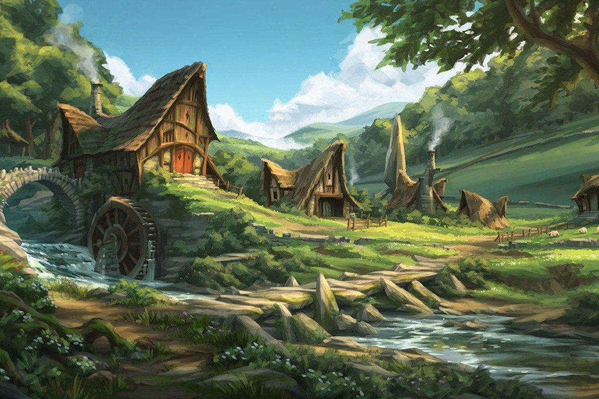

Boulderglen

A quiet halfling village nestled on the outskirts of Caster Hills. We prefer to keep to ourselves, and have a distate for the nonsense of outsiders. Instead, we live a simple life. Gardening and baking are two hobbies that are expected of all halflings, and all families have one secret family recipe that is forbidden to share with any other family. Do not ask a family for their secret recipe
We value manners above all else and expect the same of our guests. Shenanigans and tomfoolery are not tolerated within Boulderglen, and anyone engaging in such monkeyshine will be promptly asked to leave.
It is customary to always bring a gift for your host in Boulderglen, so if you plan on staying, come prepared. Traditional gifts include wines and beers, exotic produce seeds, flowers, wooden gift boxes, or small trinkets that one could enjoy above their mantel. Weapons, armor, jewels, or anything enchanted or cursed make for bad gifts, and you'll be sure to get a slice of slightly sour cheese if you think these are appropriate gifts.
Boulderglen doesn't have any official government. We prefer to govern ourselves and live our lives by the traditions of our ancestors. There is no crime within Boulderglen and we expect to keep it that way.